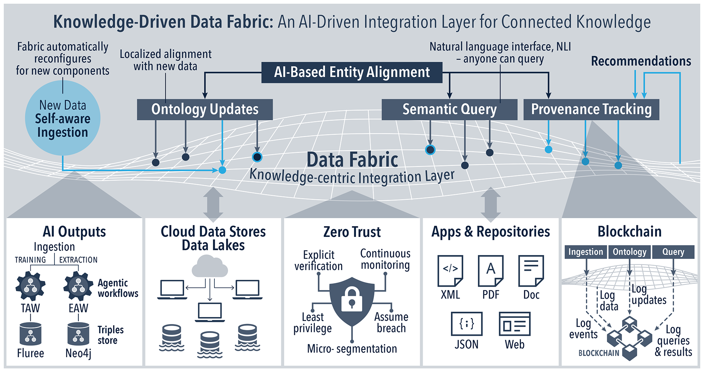

Research Agents · Appendix
Not another data lake. A knowledge-centric integration layer that connects sources into one queryable, provenance-tracked body of knowledge, with AI doing the connecting.
The flyer's question was how an individual researcher leverages this idea with an agent of their own. This is the idea.
The main note says the field's emerging answer to siloed data is the Data Fabric. This is the picture we have in mind when we say it: sources feed a woven integration layer, entity alignment stitches them together, ontologies keep the meaning current, anyone can query in natural language, and every step is tracked for provenance. The point is not to move the data into one place; it is to connect what already exists so an agent can reason across all of it.

The flyer's argument is that this fabric is worth little to an individual scientist until they can plug into it with an agent that learns their own work. That plug-in exists and runs today, and much of it maps directly onto the layers above.
ask primitive plus a standard, read-only MCP server let any capable host query shared knowledge in plain language, with the researcher's own model reasoning over it.by: <human> via <agent>), versioned in git, and screened by a verification gate that blocks numbers not backed by real output. Corrections are filed alongside the original, not over it.The layer we are still building: identity and trust. The fabric's zero-trust and provenance layers are where identity lives, and that is the piece we have not yet made portable: today access is gated by a platform login. The direction is decentralized identifiers (DIDs), a portable identity each source and agent owns. It doubles as the alignment anchor, because a DID is a canonical identifier, identity and a source's small ontology sit in one graph rather than two systems, and as the credential that gates consumption. Discovery stays open; access stays sovereign. This one is on the roadmap, not built yet.
This adds up to the data-management standard the audience already uses. FAIR was written for data a machine can act on with minimal human help, and it never named the machine. Here it is the Research Agent.
The fabric connects data sources and makes them queryable. That is real work, and worth doing.
What it does not do is carry judgment or accrue experience. It connects data; it does not remember why a result was trusted, who corrected it, or what a group learned along the way.
That is the part the Research Agent and its living memory add. The researcher works through an agent over a shared wiki they own, on a non-proprietary template, and what the agent extracts lands in a memory that grows and stays attributed. So the fabric connects the data, and the memory keeps the understanding. The two together are what let an individual researcher use the idea, rather than watch it happen at the level of the institution.